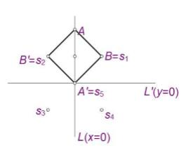

HDU5964. 平行四边形
内存限制：4000/2000 MS (Java/Others)
时间限制：65536/65536 K (Java/Others)
题目描述
假设直线L和L'相交于原点O。假设S ={$ s_1, s_2,...,s_n$}是平面上的n个点。你打 算找四个点满足如下条件：
1. A $\in$ L 而 A' $\in$ L'。
2. B,B'都属于S;即 B$\in$S 且B'$\in$S。
3. A,A'的中点与B,B'的中点重叠。这意味着ABA'B'是一个平行四边形(或者退 化的平行四边形)。
4. 平行四边形ABA'B'的面积最大。
输入格式
包含多组测试数据
。
第一行有4个整数a, b, a', b'，分别描述L和L'的坐标方程。具体来说，L的方程 为 ax + by = 0 ;而 L'的方程为 a'x + b'y = 0。
第二行有一个整数n。
接下来n行每行两个整数，表示一对坐标，描述S中的n个点。
保证n <= $10^6$，其他输入整数的绝对值不超过$10^4$;保证ab'$\neq$ba'，$a^2+ b^2>0， a'^2 + b'^2 > 0$。
输出格式
输出一个整数，表示最大平行四边形的面积四舍五入到整数的值。
保证所有数据中，最大面积在四舍五入前的小数部分在[0,0.4] $\bigcup$ [0.6,1)中。
样例
样例输入
1 0 0 1 5 1 1 -1 1 -1 -1 1 -1 0 0
样例输出
2
Hint

数据范围与提示
2016年中国大学生程序设计竞赛（合肥）-重现赛（感谢安徽大学）